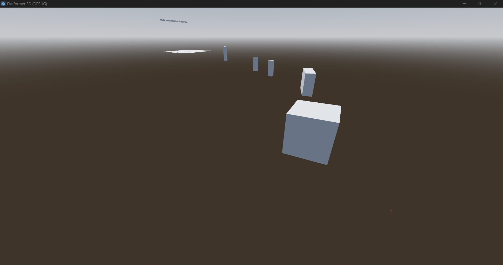
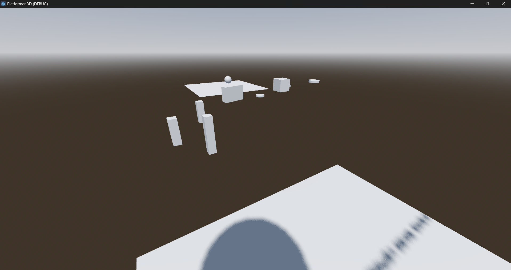
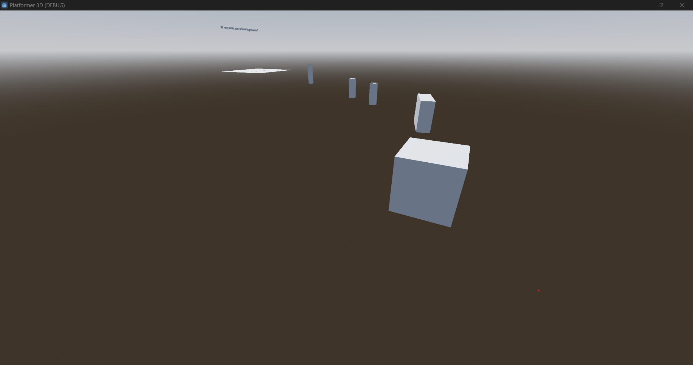
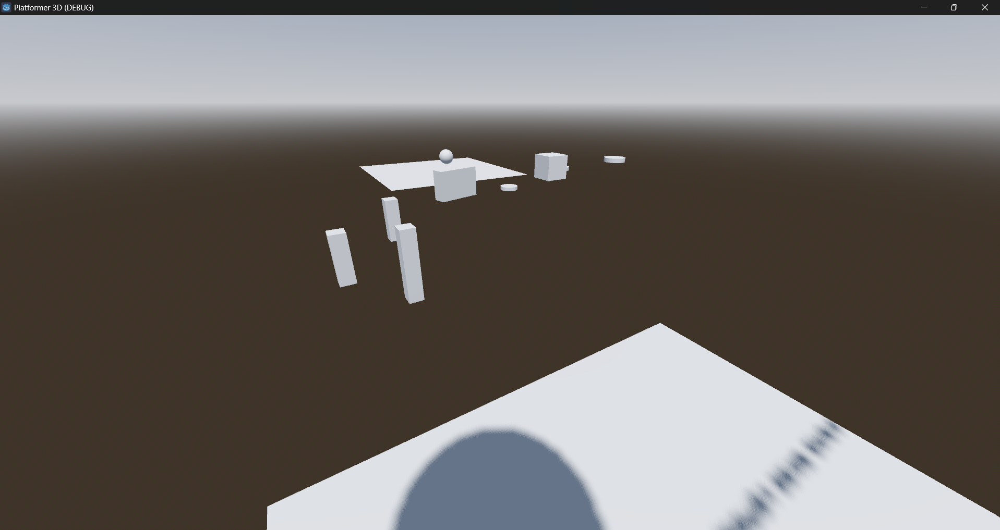

Page d'accueil |
Mes compétences |
Situations professionnelles |
Mes Certifications |
Ma veille
Situations professionnelles
Développement / Sites web / Gestion de projets
- Projet réseau social
- Projet "Devine le nombre"
-
Documentation pour mise en place d'un Cybercafé Gaming LLDR Gaming
-
Projet jeu clicker "WR Clicker"


-
Jeu vidéo platformer sur Godot, programmé en GodotScript
 



- Script Python pour créer fichier source pour du SQL à insérer dans une base de données GLPI
Serveurs
- Serveur Apache
- Serveur SSH
- Serveur Debian
- Serveur Ubuntu
- Serveur de jeu Minetest pour projet Cybercafé LLDR Gaming